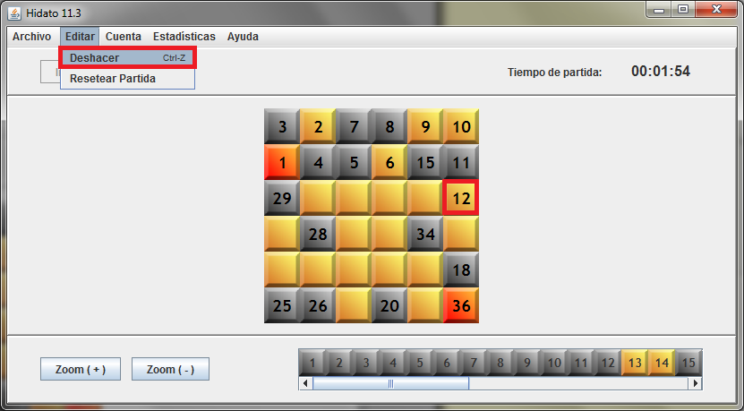
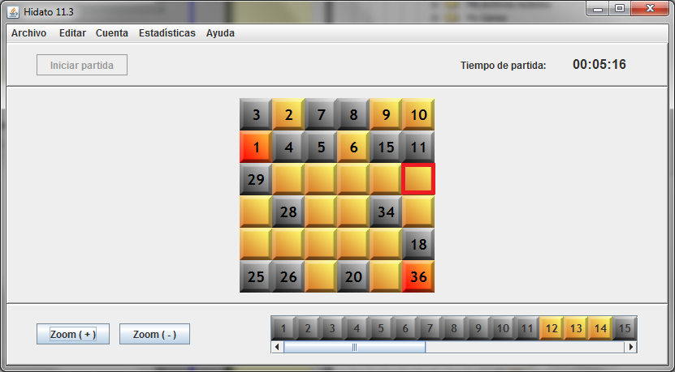

Dentro de las funcionalidades de 'Proponer Tablero', 'Proponer Topología' y 'Introducir y Quitar Casillas' en un Hidato en juego, se ofrece la posibilidad de deshacer los últimos movimientos realizados.
Para ello, primero seleccione el menú 'Editar':

A continuación seleccione la opción 'Deshacer'. También puede usar el atajo presionando 'Ctrl + Z'.

Supongamos que la última casilla colocada fuera el 12, marcada en rojo. En ése caso, 'Deshacer' nos borraría ésa casilla:

Si usáramos 'Deshacer' sucesivamente, se irían revirtiendo los últimos cambios hechos por el usuario en el tablero, en orden inverso.
No obstante, la función 'Deshacer' solo tiene memoria para unas pocas jugadas, suficientes para revertir los cambios si el usuario ha cometido algún error.